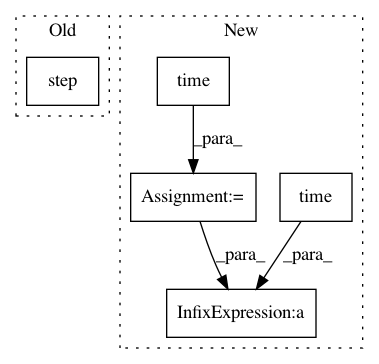

61228f3243eaee39cba31a9abd2afc6ead9612a8,implementations/bicyclegan/bicyclegan.py,,,#,136
Before Change
// Update learning rates
lr_scheduler_G.step()
lr_scheduler_D_VAE.step()
lr_scheduler_D_LR.step()
if opt.checkpoint_interval != -1 and epoch % opt.checkpoint_interval == 0:
// Save model checkpoints
torch.save(generator.state_dict(), "saved_models/generator_%d.pth" % epoch)
After Change
z = sampled_z * std + mu
return z
start_time = time.time()
for epoch in range(opt.epoch, opt.n_epochs):
for i, batch in enumerate(dataloader):
// Set model input
real_A = Variable(batch["A"].type(Tensor))
real_B = Variable(batch["B"].type(Tensor))
// -----------------------------
// Train Generator and Encoder
// -----------------------------
optimizer_E.zero_grad()
optimizer_G.zero_grad()
// Produce output using encoding of B (cVAE-GAN)
mu, logvar = encoder(real_B)
encoded_z = reparameterization(mu, logvar)
fake_B = generator(real_A, encoded_z)
// Produce output using sampled z (cLR-GAN)
sampled_z = Variable(Tensor(np.random.normal(0, 1, (mu.size(0), opt.latent_dim))))
_fake_B = generator(real_A, sampled_z)
// Pixelwise loss of translated image by VAE
loss_pixel = pixelwise_loss(fake_B, real_B)
// Kullback-Leibler divergence of encoded B
loss_kl = torch.sum(0.5 * (mu**2 + torch.exp(logvar) - logvar - 1))
// Discriminators evaluate generated samples
VAE_validity1, VAE_validity2 = D_VAE(fake_B)
LR_validity1, LR_validity2 = D_LR(_fake_B)
// Adversarial losses
loss_VAE_GAN = (adversarial_loss(VAE_validity1, valid1) + \
adversarial_loss(VAE_validity2, valid2)) / 2
loss_LR_GAN = (adversarial_loss(LR_validity1, valid1) + \
adversarial_loss(LR_validity2, valid2)) / 2
// Shared losses between encoder and generator
loss_GE = loss_VAE_GAN + \
loss_LR_GAN + \
lambda_pixel * loss_pixel + \
lambda_kl * loss_kl
loss_GE.backward()
optimizer_E.step()
// Latent L1 loss
_mu, _ = encoder(generator(real_A, sampled_z))
loss_latent = lambda_latent * latent_loss(_mu, sampled_z)
loss_latent.backward()
optimizer_G.step()
// --------------------------------
// Train Discriminator (cVAE-GAN)
// --------------------------------
optimizer_D_VAE.zero_grad()
// Real loss
pred_real1, pred_real2 = D_VAE(real_B)
loss_real = (adversarial_loss(pred_real1, valid1) + \
adversarial_loss(pred_real2, valid2)) / 2
// Fake loss (D_LR evaluates samples produced by encoded B)
pred_gen1, pred_gen2 = D_VAE(fake_B.detach())
loss_fake = (adversarial_loss(pred_gen1, fake1) + \
adversarial_loss(pred_gen2, fake2)) / 2
// Total loss
loss_D_VAE = (loss_real + loss_fake) / 2
loss_D_VAE.backward()
optimizer_D_VAE.step()
// -------------------------------
// Train Discriminator (cLR-GAN)
// -------------------------------
optimizer_D_LR.zero_grad()
// Real loss
pred_real1, pred_real2 = D_LR(real_B)
loss_real = (adversarial_loss(pred_real1, valid1) + \
adversarial_loss(pred_real2, valid2)) / 2
// Fake loss (D_LR evaluates samples produced by sampled z)
pred_gen1, pred_gen2 = D_LR(_fake_B.detach())
loss_fake = (adversarial_loss(pred_gen1, fake1) + \
adversarial_loss(pred_gen2, fake2)) / 2
// Total loss
loss_D_LR = 0.5 * (loss_real + loss_fake)
loss_D_LR.backward()
optimizer_D_LR.step()
// --------------
// Log Progress
// --------------
// Determine approximate time left
batches_done = epoch * len(dataloader) + i
batches_left = opt.n_epochs * len(dataloader) - batches_done
time_left = datetime.timedelta(seconds=batches_left * (time.time() - start_time)/ (batches_done + 1))
// Print log
sys.stdout.write("\r[Epoch %d/%d] [Batch %d/%d] [D VAE_loss: %f, LR_loss: %f] [G loss: %f, pixel: %f, latent: %f] ETA: %s" %
In pattern: SUPERPATTERN
Frequency: 3
Non-data size: 5
Instances
Project Name: eriklindernoren/PyTorch-GAN
Commit Name: 61228f3243eaee39cba31a9abd2afc6ead9612a8
Time: 2018-05-04
Author: eriklindernoren@gmail.com
File Name: implementations/bicyclegan/bicyclegan.py
Class Name:
Method Name:
Project Name: tensorlayer/tensorlayer
Commit Name: 8b68349d43621619fe799ab4afc21da7f1fb2515
Time: 2019-06-10
Author: 34995488+Tokarev-TT-33@users.noreply.github.com
File Name: examples/reinforcement_learning/tutorial_PPO.py
Class Name:
Method Name:
Project Name: BYU-PCCL/holodeck
Commit Name: 53d92fcf980d3a063d6aa2456cda63b2eded83cf
Time: 2019-01-04
Author: nickwalton00@gmail.com
File Name: example.py
Class Name:
Method Name: editor_example